Guest lecture · EMU COSC 480/592 Computer Vision · November 17, 2026 · Yayuan Li, University of MichiganWhere Physical AI Stands: From First-Person Video to Agents That Act
understand the field §1 what it is the loop · embodiment §2 the anatomy seven stages · sense · represent · anticipate · decide · act · verify adapt §3 toward production the missing part · build on today go further §4 where to look next keywords and links
- One pass over the field: what physical AI is, the seven stages people work on, and how far each is from production.
- Broad rather than deep. Every stage names its papers, and the last slide lists keywords to search later.
- Everything here is in the hub, an open database of physical AI papers. These slides are on GitHub.
- Leave knowing which stage interests you and what to search for next.
What physical AI is
the physical world, objects and the changes they undergo
│
sense │ ▲
▼ │
┌─ model it ───────────────────────┐ │ acting changes the world,
│ represent ──► anticipate │ │ so what has to be modeled
└────────────────┬─────────────────┘ │ changes too
│ decide │
┌─ change it ────▼──────────────────┐ │
│ act ──► verify ──► adapt ├───────────────┘
│ through an embodiment: a │
│ person wearing glasses, a │
│ robot, or the two together │
└───────────────────────────────────┘
- The subject is the change. Who carries it is a variable: a person wearing glasses, a robot, or both.
- Model the world, then change it through an embodiment, the hub's word for who moves the atoms. Acting changes the model, so the two close into a loop.
- Every hub paper is tagged with the stages it touches, so the loop can be counted. §2 walks it one stage at a time.
where we are understand the field §1 what it is the loop · embodiment §2 the anatomy seven stages · sense · represent · anticipate · decide · act · verify adapt §3 toward production the missing part · build on today go further §4 where to look next keywords and links
Embodiment: who moves the atoms
a person a robot the two together
──────── ─────── ────────────────
the AI's job teach the person to do do the task itself share one task
what it is good harder tasks than a robot narrow tasks, full a couch through
for today can do, with a person's automation, no one a doorway. Not in
hands and judgment in the loop the hub yet
in the hub 48 papers 30 papers 6 papers
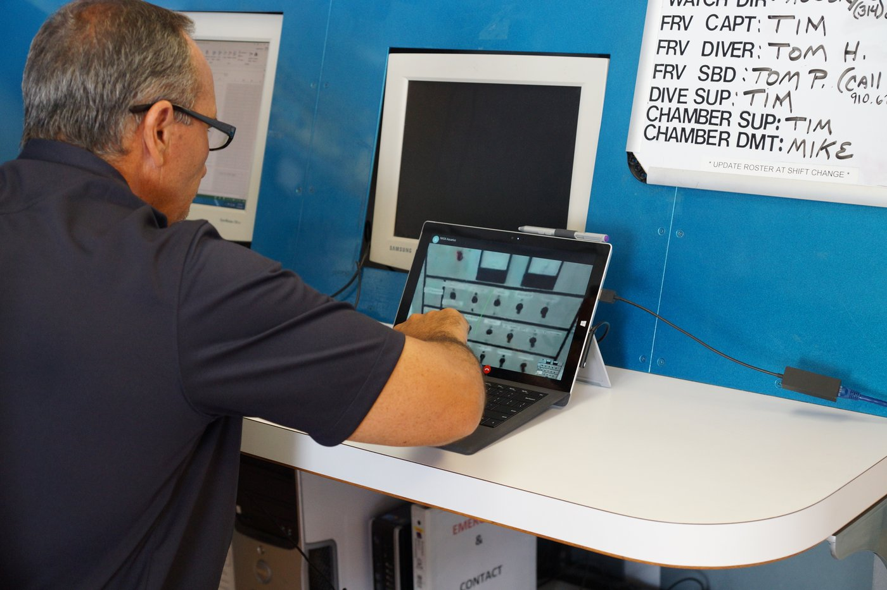
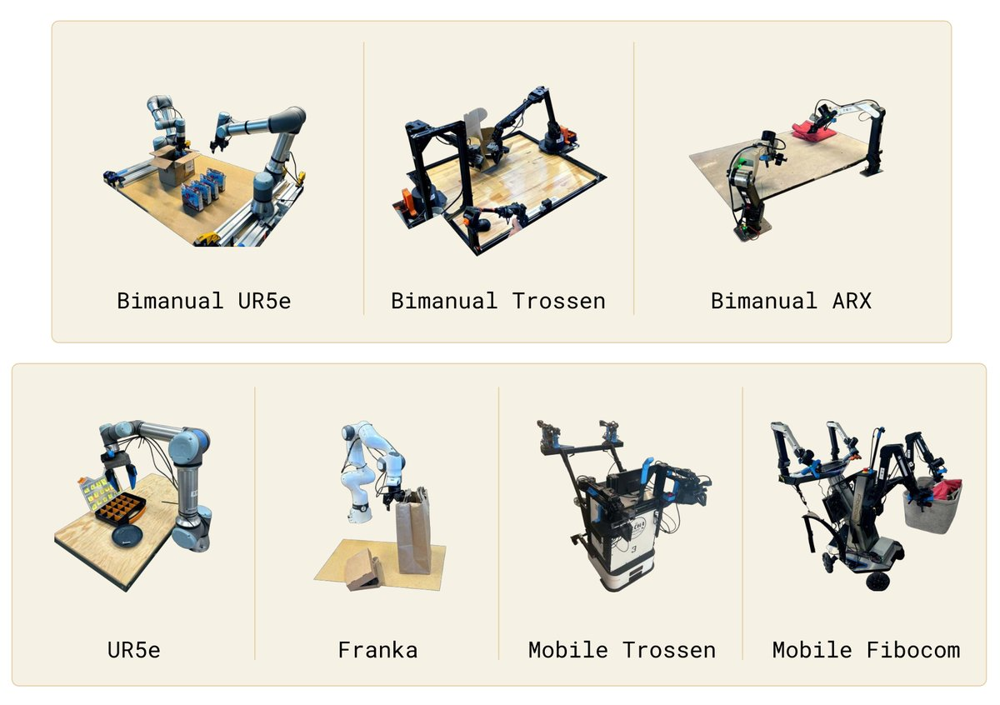
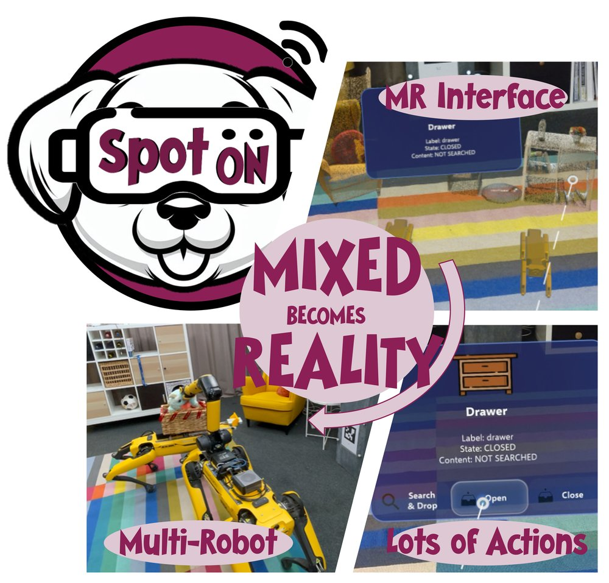
- The AI either teaches a person or is the robot. A person brings hands and judgment, and a robot brings full automation on a narrow task.
- People handle harder tasks than robots today, so a human-side system deploys earlier, and its footage trains the robot later. EgoDex, EgoVLA and DexUMI already do this.
- A person and a robot on one task is the smallest branch, 6 of 110 papers, and the one the next decade needs.
- Both embodiments change the world, so every stage in §2 keeps two rows, a person above and a robot below.
where we are understand the field §1 what it is the loop · embodiment §2 the anatomy seven stages · sense · represent · anticipate · decide · act · verify adapt §3 toward production the missing part · build on today go further §4 where to look next keywords and links
The anatomy of the field: seven stages
the physical world, objects and the changes they undergo
│
2.1 sense │ ▲
▼ │
┌─ model it ───────────────────────────────┐ │
│ 2.2 represent ──► 2.3 anticipate │ │ the loop of §1, with the
└────────────────────────┬─────────────────┘ │ stage each subsection
│ 2.4 decide │ walks written onto it
┌─ change it ────────────▼─────────────────┐ │
│ 2.5 act ──► 2.6 verify ──► 2.7 adapt ├────────┘
└──────────────────────────────────────────┘
- The research topics of the field are the seven stages of the loop in §1. Each gets a subsection: what it is, what people build, where it stands.
- Every subsection keeps the two rows of embodiment, because the same stage is a different problem for a person and for a robot.
- Two stages, 2.6 verify and 2.7 adapt, are where the hub is thinnest, and the lecture ends up there.
| stage | the question it answers | papers that live there |
|---|---|---|
| 2.1 sense | turn sensors into observations | SAM 2, HOT3D |
| 2.2 represent | turn observations into a state you can act on | DINOv2, 3D Gaussian Splatting |
| 2.3 anticipate | predict what the world does next | V-JEPA 2, Genie |
| 2.4 decide | choose the next step or the plan | SayCan, VLaMP |
| 2.5 act | emit the action: a motor command, an instruction, an overlay | π₀, ShowHowTo |
| 2.6 verify | check whether the intended change happened | PREGO, SAFE |
| 2.7 adapt | change the policy or the model from the outcome | Every Mistake Counts, Inner Monologue |
- A paper touches two or three stages as a rule. 81 of the 110 do.
- A vision-language-action policy (camera and instruction in, joint commands out) is sense, decide, act. A task assistant on glasses is sense, decide, act, verify.
- A person skipping a step and a robot policy failing are the same verify stage, and the two literatures barely cite each other.
where we are understand the field §1 what it is the loop · embodiment §2 the anatomy seven stages · sense · represent · anticipate · decide · act · verify adapt §3 toward production the missing part · build on today go further §4 where to look next keywords and links
2.1 Sense: what the hardware sees, and where the signal stops
a person
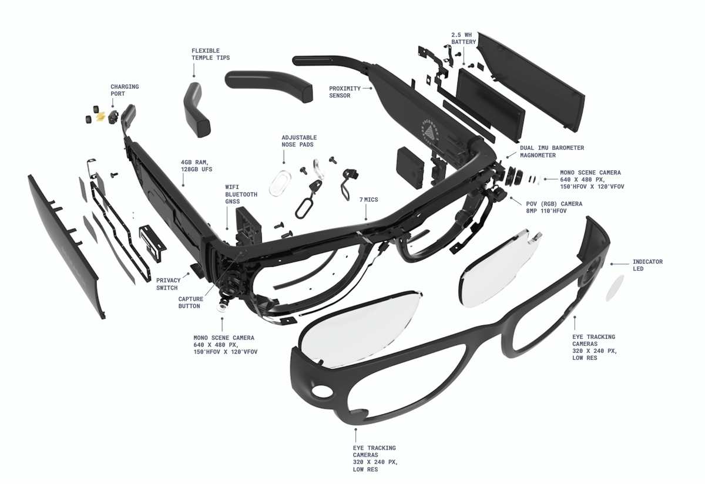
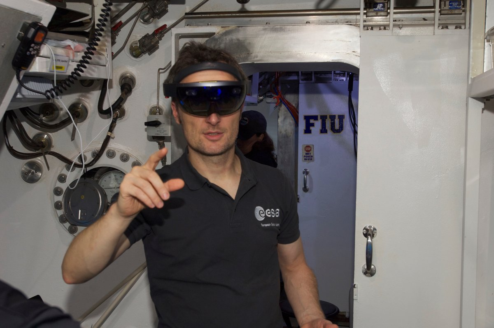
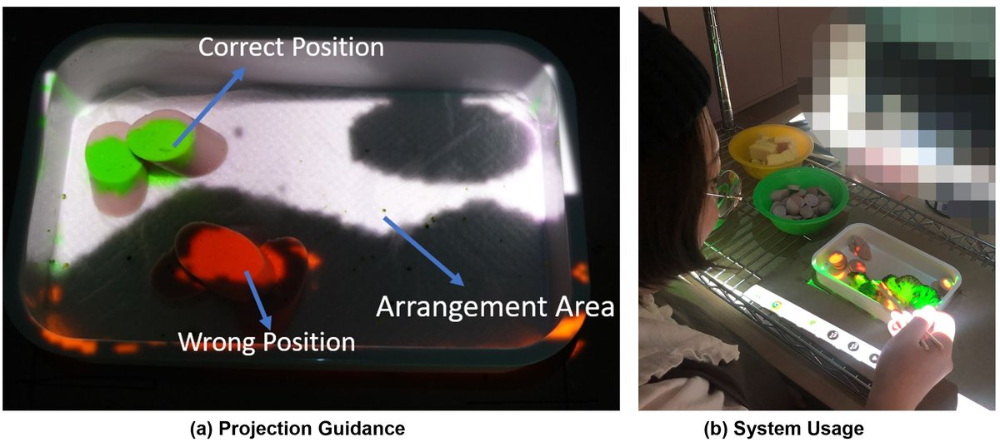
- A camera on the head sees what the person sees. 51 of the 110 papers start from that stream, more than from any other sensor.
- The return channel is the second half of the hardware, a display in the lens, a speaker, or a projector that draws on the table.
- The view is partial, hidden by the hands, and moving. All-day glasses with a display are arriving at consumer prices from three vendors in 2026.
a robot
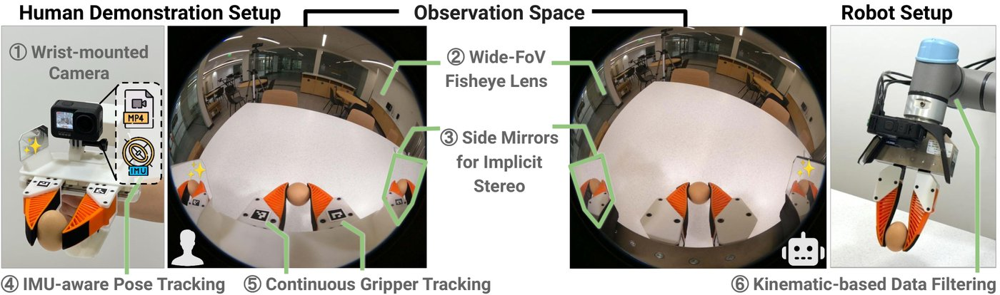
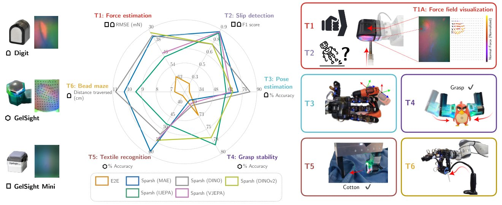
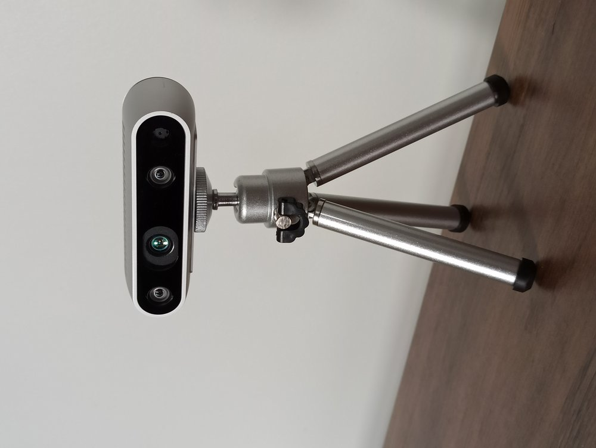
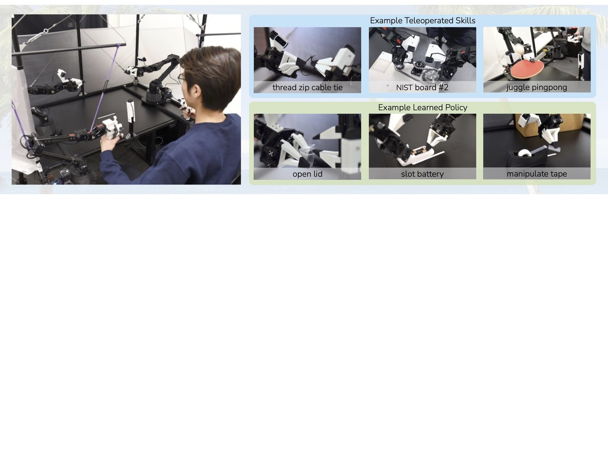
- A robot's cameras sit on the wrist and over the table. Depth and LiDAR add range, and a tactile pad on the fingertip adds contact.
- Touch is where the hub is thinnest. 2 of 110 papers sense it, and 8 hold force, mass or friction in their state.
- Every sensor is calibrated and priced per arm. Hand-held grippers (UMI, DexUMI) are the way around it, because the data arrives with no robot in the room.
where we are understand the field §1 what it is the loop · embodiment §2 the anatomy seven stages · sense · represent · anticipate · decide · act · verify adapt §3 toward production the missing part · build on today go further §4 where to look next keywords and links
2.2 Represent: there is no best representation, only the one for the job
2012 AlexNet supervised features from a labeled corpus 2017 Transformer attention, built to train in parallel on GPUs 2020 ViT · NeRF an image as patches; a scene as a neural field 2021 CLIP · MAE · DINO image and text in one space; masked and self-distilled features 2022 latent diffusion generate; the representation is what a denoiser learns 2023 I-JEPA · DINOv2 · 3DGS predict in latent space; frozen features; explicit geometry 2024 V-JEPA the same prediction over video 2025 V-JEPA 2 · DINOv3 video → latent world model → robot planning
- Representation learning is this stage. Each milestone changed what a downstream model can read off an image, from labels to language to geometry to the future.
- The transformer won on parallel training, not accuracy. A ViT trails a ResNet on mid-sized data and only wins past 14M images (Dosovitskiy et al., 2020).
- When compute stops binding, other designs come back. All-MLP (MLP-Mixer, 2021) and recurrent (Mamba, 2023) models both match transformers on their benchmarks.
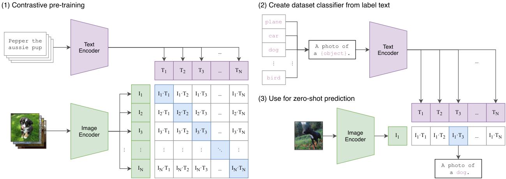
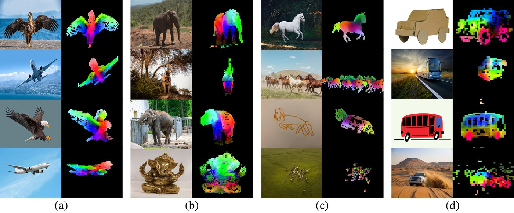
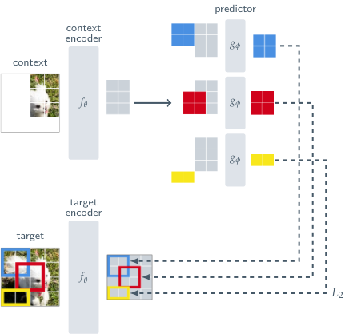
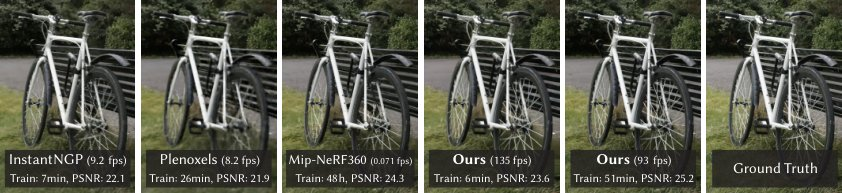
- There is no best one. Half the hub's world models start from a frozen DINOv2 because freezing it is cheap, not because it fits their task.
- The choice follows the need and the budget. Language-aligned to follow instructions, geometric to plan a grasp, predictive to anticipate, and a convnet when production data is small.
- Read a representation paper for the downstream task it was tested on. That is the job it is good for, and often the only one.
where we are understand the field §1 what it is the loop · embodiment §2 the anatomy seven stages · sense · represent · anticipate · decide · act · verify adapt §3 toward production the missing part · build on today go further §4 where to look next keywords and links
2.3 Anticipate: think before you move
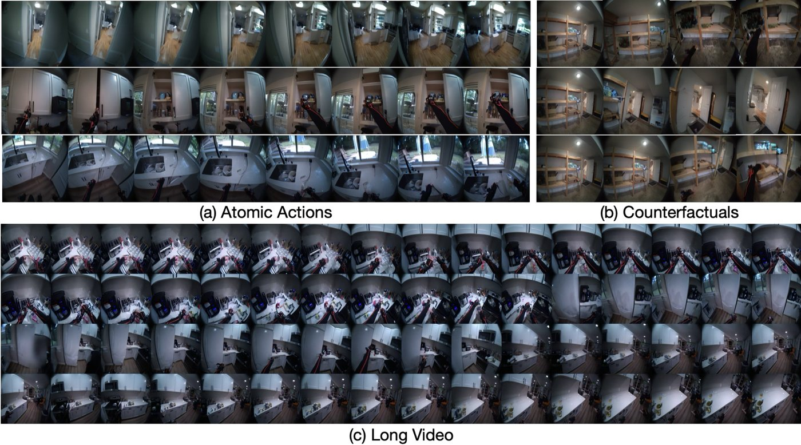
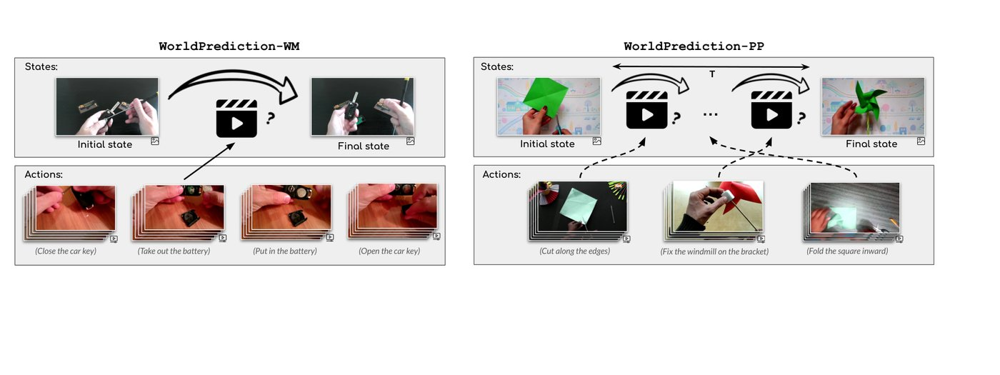
- People think before they move, and often run the counterfactual first: what fails if I slice the potato instead of dicing it. Physical AI needs the same stage.
- The text side reasons over steps and effects. Procedural reasoning and counterfactual reasoning are the search terms, and WorldPrediction benchmarks both.
- The vision side is the world model, a video generator rendering the action and its effect from the actor's viewpoint. PEVA for a body, V-JEPA 2 for a robot.
- A person and a robot follow the prediction differently. That difference is 2.4 and 2.5.
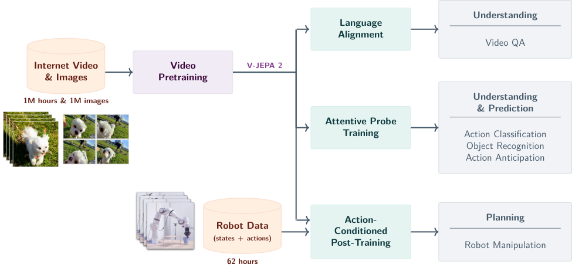
- Only the last 62 hours involve a robot. The planner samples actions and keeps the one whose predicted latent lands nearest the goal.
- Predicted futures still break physics where it can be measured. Text-to-video models fail most of PhyGenBench's 27 laws, and scale does not close the gap.
where we are understand the field §1 what it is the loop · embodiment §2 the anatomy seven stages · sense · represent · anticipate · decide · act · verify adapt §3 toward production the missing part · build on today go further §4 where to look next keywords and links
2.4 Decide: pick one future, and say why
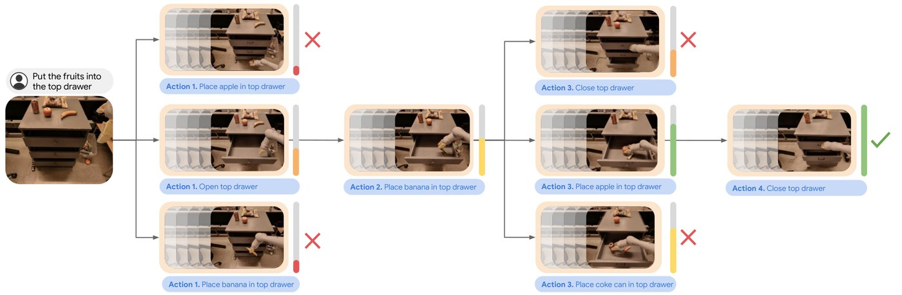
- Selection is a search over imagined outcomes. Video Language Planning searches a tree of generated clips, and V-JEPA 2 samples actions and picks by predicted cost.
- More compute buys a better plan in both, which is the argument for keeping anticipate and decide separable even when one network does both.
a person
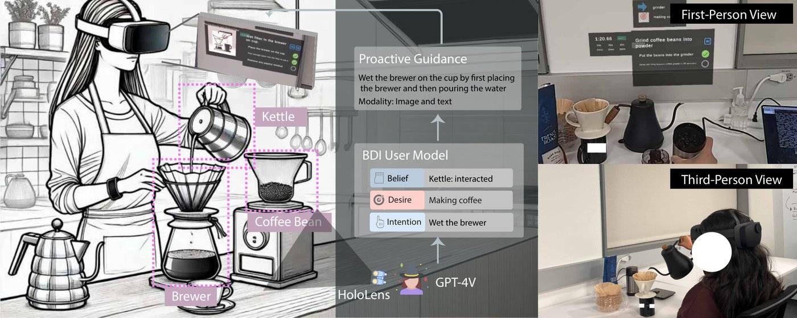
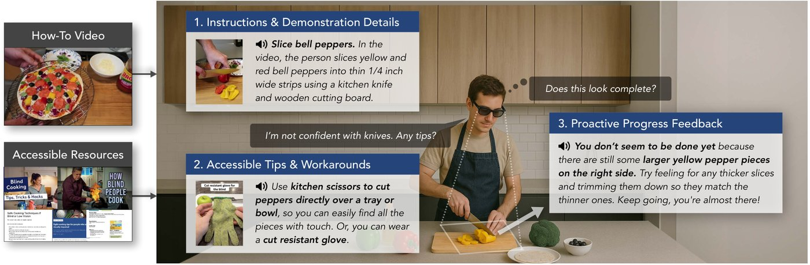
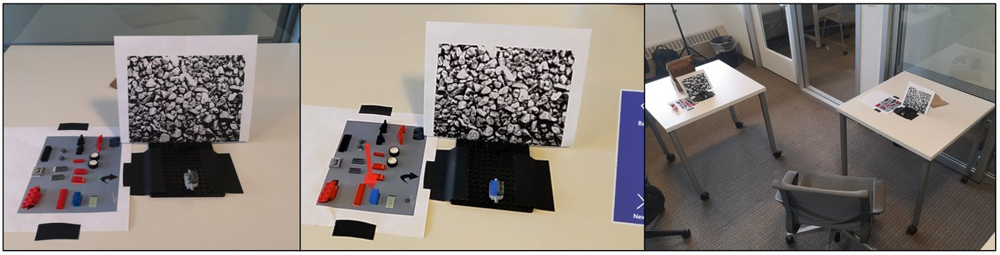
- For a person, deciding includes what to say and when. Satori's authors call timing the hard problem, and the AR study shows more guidance is not better.
- Too much and the person is overwhelmed, too little and they distrust it. A chatbot's essay followed by three options is the virtual version of the same failure.
- The physical version has stakes. A step near fire, electricity or a patient needs a decision the person can check before acting, with the reason attached.
where we are understand the field §1 what it is the loop · embodiment §2 the anatomy seven stages · sense · represent · anticipate · decide · act · verify adapt §3 toward production the missing part · build on today go further §4 where to look next keywords and links
2.5 Act: a person just acts, a robot has to be controlled
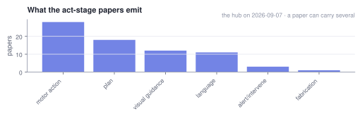
- For a person, act is the easy stage. Given a good decision, they do it. The system's act is an instruction, an image or an overlay.
- For a robot, act is control, the chosen plan turned into joint commands at tens of hertz. All of robot learning lives in the motor-action bar.
2022 Code as Policies the language model writes the program that calls the controller 2022 RT-1 a transformer maps camera and instruction to discrete actions 2023 Diffusion Policy · ACT actions as a denoised trajectory; commit to a chunk at a time 2023 RT-2 a VLM fine-tuned to emit actions as tokens: the first VLA 2024 OpenVLA · π₀ an open 7B VLA; a flow-matching action head across bodies 2025 GR00T N1 · π₀.₅ a slow reasoner over a fast actor; open-world generalization 2025–26 Genie Envisioner · DreamZero world action models: predict the video and the action together
- Four branches compete: write the program, denoise the trajectory, emit action tokens from a VLM, or predict video and action together. No one knows yet which wins.
- Diffusion Policy beat the prior state of the art by 46.9% across 12 tasks. OpenVLA beat RT-2-X by 16.5 points with 7× fewer parameters.
- A world action model folds anticipate, decide and act into one network. DreamZero runs 14B parameters closed-loop at 7 Hz and generalizes twice as well as VLAs.
where we are understand the field §1 what it is the loop · embodiment §2 the anatomy seven stages · sense · represent · anticipate · decide · act · verify adapt §3 toward production the missing part · build on today go further §4 where to look next keywords and links
2.6 Verify: close the loop on what happened
a robot
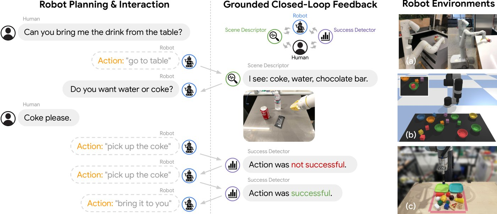
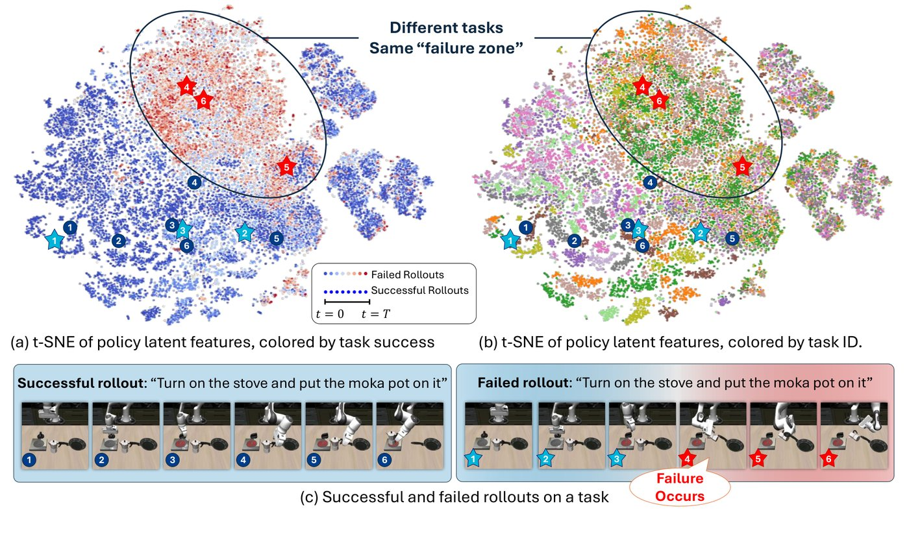
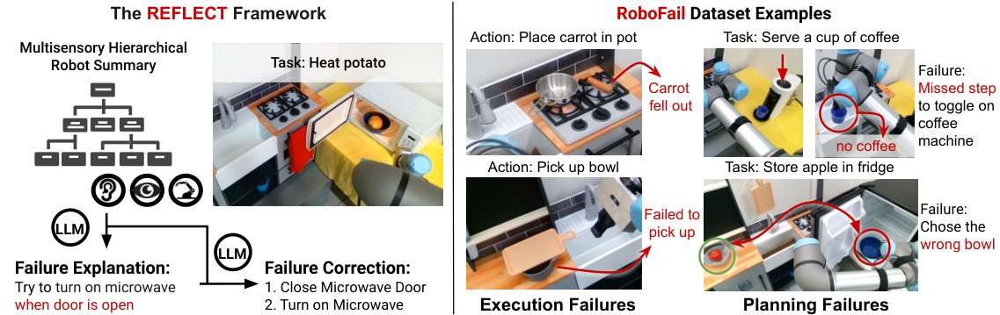
- Verify is what makes the next decision rest on what happened rather than on what was intended. Without it the loop is open, however good the policy.
- The robot side has had it since Inner Monologue, a check after every step and a replan. SAFE detects the failure and REFLECT explains it.
a person
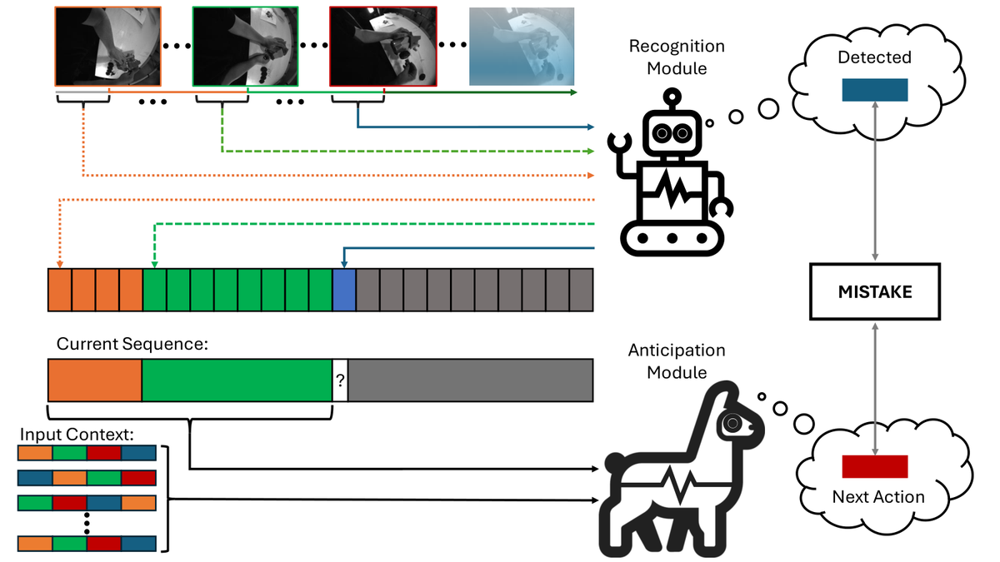
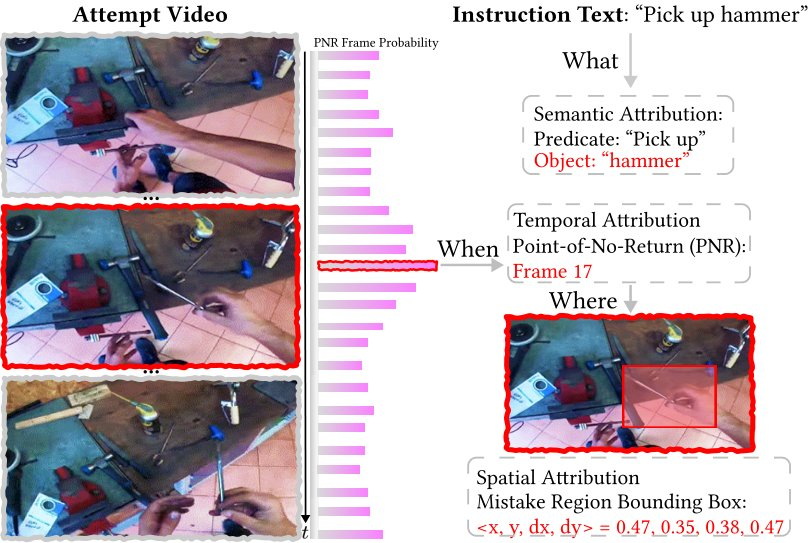
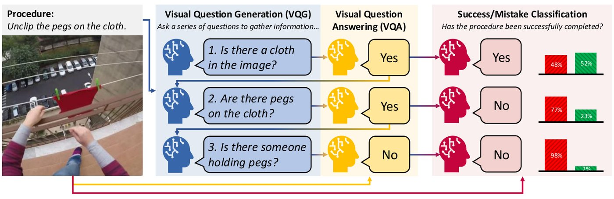
- The human side calls it mistake detection. The intervals are longer, a step rather than a motor command, and the verdict needs a reason the person will accept.
- The research has moved from a flag to an account of what was wrong, when it became irreversible, where in the frame, and why the system thinks so.
- The two literatures ask the same question at the same stage and barely cite each other.
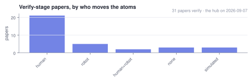
| embodiment | papers | close the loop | % |
|---|---|---|---|
| Human | 48 | 14 | 29 |
| Robot | 30 | 23 | 77 |
| Human+Robot | 6 | 5 | 83 |
| None | 23 | 2 | 9 |
| Simulated | 11 | 9 | 82 |
- 21 of the 31 verify papers watch a person. 5 watch a robot.
- 23 of the 30 robot papers consume the effect of their own action. 14 of the 48 human ones do. Most guidance systems emit an instruction and stop.
- A robot policy that never looked at the result would not get published. A guidance system that never does is the norm. That gap is a project.
where we are understand the field §1 what it is the loop · embodiment §2 the anatomy seven stages · sense · represent · anticipate · decide · act · verify adapt §3 toward production the missing part · build on today go further §4 where to look next keywords and links
2.7 Adapt: better on the next attempt because of the last one
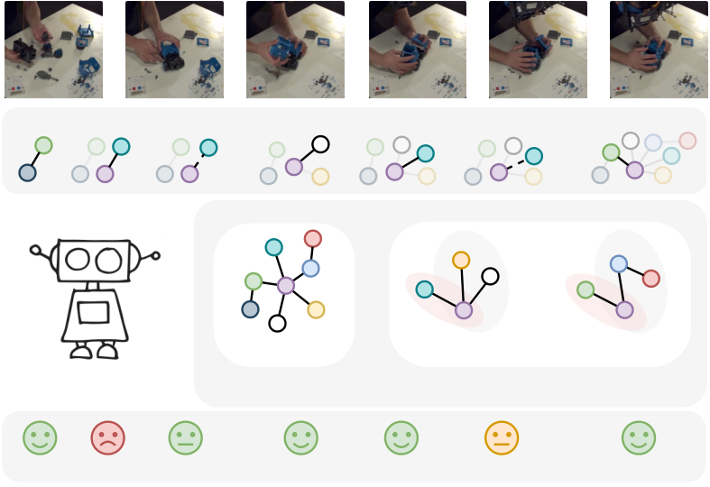
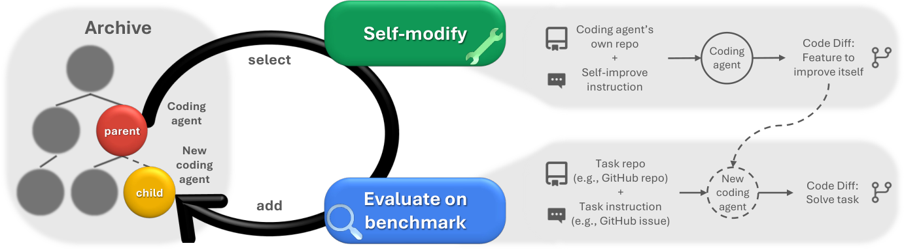
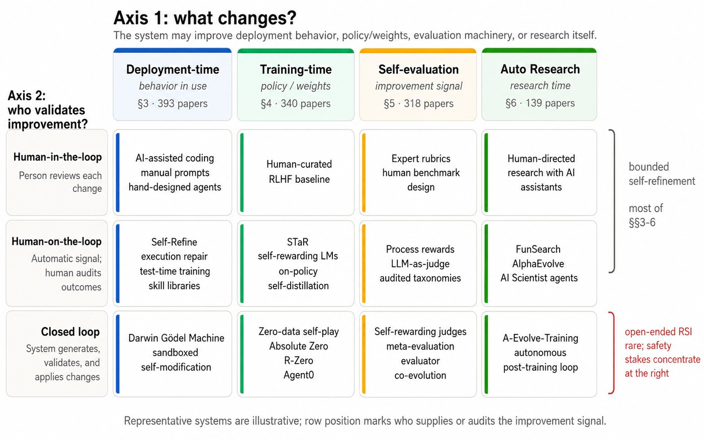
- The old name is continual learning. The new one is self-evolving AI, and it covers the harness around the model as well as its weights.
- The frontier labs run it on coding agents, where the loop closes cheaply. The Darwin Gödel Machine and its relatives rewrite their own code and keep what scores.
- The same survey finds the open-ended version bounded on every measured axis, and MIT Technology Review's August 2026 read is that it is not coming quickly.
- Physical AI needs it too. A guidance system that changes its next instruction because of what the last one did is this stage, and the stage is empty.
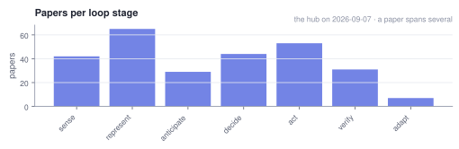
- 7 of 110 papers adapt. The field can tell that something went wrong and almost never learns from it while running.
- The exceptions are from 2023 and 2022. Every Mistake Counts updates its constraints as it watches, and Inner Monologue feeds the outcome back as text.
where we are understand the field §1 what it is the loop · embodiment §2 the anatomy seven stages · sense · represent · anticipate · decide · act · verify adapt §3 toward production the missing part · build on today go further §4 where to look next keywords and links
the physical world, objects and the changes they undergo
│
2.1 sense │ ▲
▼ │
┌─ model it ───────────────────────────────┐ │
│ 2.2 represent ──► 2.3 anticipate │ │ the loop of §1, with the
└────────────────────────┬─────────────────┘ │ stage each subsection
│ 2.4 decide │ walks written onto it
┌─ change it ────────────▼─────────────────┐ │
│ 2.5 act ──► 2.6 verify ──► 2.7 adapt ├────────┘
└──────────────────────────────────────────┘
Toward production and real-world impact
The missing part is data
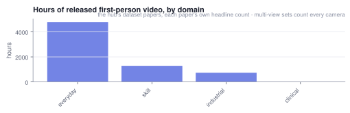
| dataset | hours | tier | note | source |
|---|---|---|---|---|
| Ego4D | 3670 | everyday | unscripted daily life | arXiv 2110.07058 |
| EgoDex | 829 | everyday | tabletop manipulation with hand tracking | arXiv 2505.11709 |
| EPIC-KITCHENS-100 | 100 | everyday | kitchens | arXiv 2006.13256 |
| CaptainCook4D | 94.5 | everyday | recipes with induced errors | arXiv 2312.14556 |
| HD-EPIC | 41 | everyday | kitchens with a digital twin | arXiv 2502.04144 |
| HowToDIV | 24 | everyday | clips behind generated dialogues | arXiv 2508.11192 |
| HOT3D | 13.9 | everyday | 833 minutes of hand and object tracking | arXiv 2411.19167 |
| EgoOops | 6.8 | everyday | text-following tasks with mistakes | arXiv 2410.05343 |
| HUMOTO | 2.2 | everyday | mocap human-object interaction | arXiv 2504.10414 |
| Ego-Exo4D | 1286 | skill | ego and exo cameras combined; 5035 takes | arXiv 2311.18259 |
| Assembly101 | 513 | industrial | 12 views of toy-vehicle assembly; 362 sequences of 7 min | arXiv 2203.14712 |
| HoloAssist | 166 | industrial | instructor talks a performer through a task | arXiv 2309.17024 |
| Ego-EXTRA | 50 | industrial | expert plays the assistant | arXiv 2512.13238 |
| IndustReal | 5.8 | industrial | 84 assembly and maintenance sequences | arXiv 2310.17323 |
- About 4,800 hours of everyday life, 1,286 of skill from one dataset, 735 industrial, 513 of them twelve views of toy assembly, and nothing clinical.
- The professional end owns the value and the intellectual property. Hospitals and factories do not release footage, so the largest record of expert guidance is 50 hours.
- Impact in production is a data problem before a method problem. The routes are one-demonstration learning, synthetic data, or data that never leaves the site.
where we are understand the field §1 what it is the loop · embodiment §2 the anatomy seven stages · sense · represent · anticipate · decide · act · verify adapt §3 toward production the missing part · build on today go further §4 where to look next keywords and links
What you can build on today
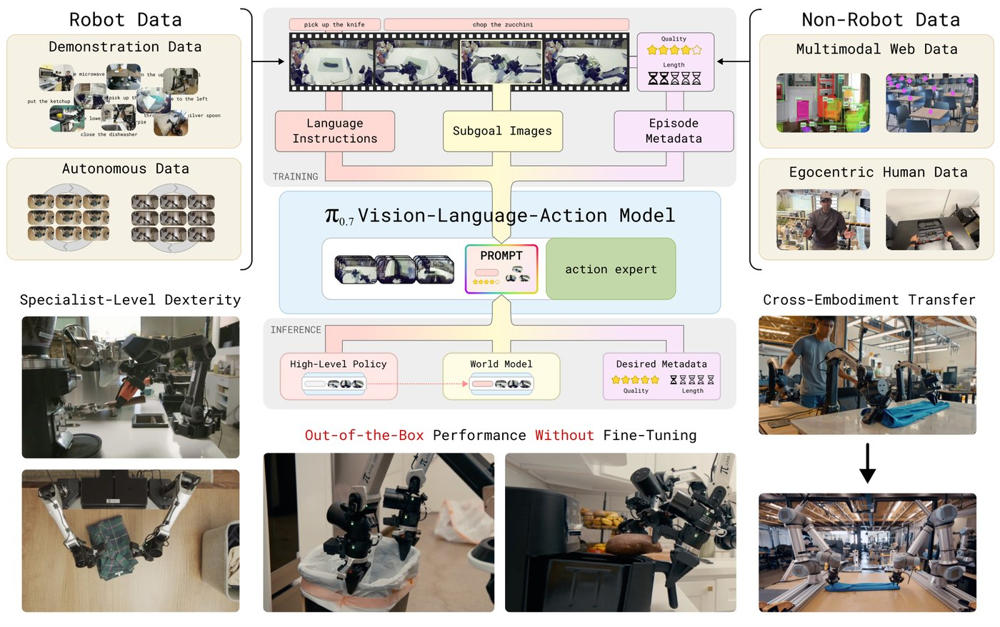
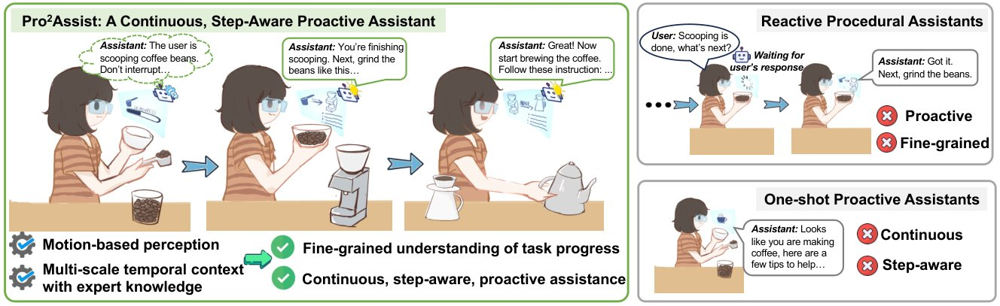
- Two links, one per embodiment, to the latest thing you can start from.
- Both are stacks of 2.1 to 2.5, and the robot one is a product. Neither adapts.
where we are understand the field §1 what it is the loop · embodiment §2 the anatomy seven stages · sense · represent · anticipate · decide · act · verify adapt §3 toward production the missing part · build on today go further §4 where to look next keywords and links
Where to look next
| stage | search for | start with |
|---|---|---|
| 2.1 sense | egocentric video, smart glasses, tactile sensing | SAM 2, HOT3D |
| 2.2 represent | representation learning, self-supervised learning, JEPA | DINOv2, 3D Gaussian Splatting |
| 2.3 anticipate | world models, procedural reasoning, counterfactual reasoning | V-JEPA 2, Genie |
| 2.4 decide | task planning with language models, video language planning, proactive AR assistants | SayCan, VLaMP |
| 2.5 act | vision-language-action models, diffusion policy, world action models | π₀, ShowHowTo |
| 2.6 verify | mistake detection, failure detection | PREGO, SAFE |
| 2.7 adapt | continual learning, self-evolving AI | Every Mistake Counts, Inner Monologue |
- Each row is one stage: the words to search for, and two papers to start with.
- Resource hub and these slides: github.com/yayuanli-org/awesome-physical-ai.
- New to the field? The hub's must-read list for students is four papers, each one part of a vision-language-action model.